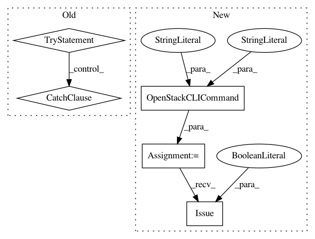

00f9f416594b404c02f87cec85d405cad341d4ad,perfkitbenchmarker/providers/openstack/os_network.py,OpenStackFirewall,AllowPort,#OpenStackFirewall#Any#Any#Any#,83
Before Change
if sec_group_rule in self.sec_group_rules_set:
return
for prot in ("tcp", "udp",):
try:
self.__nclient.security_group_rules.create(
self.sec_group.id, ip_protocol=prot,
from_port=port, to_port=to_port)
except BadRequest:
logging.debug("Rule %s:%d-%d already exists",
prot, port, to_port)
self.sec_group_rules_set.add(sec_group_rule)
def DisallowAllPorts(self):
pass
After Change
sec_group_rule = (port, to_port, vm.group_id)
with self._lock:
cmd = utils.OpenStackCLICommand(vm, "security group rule", "create",
vm.group_id)
cmd.flags["dst-port"] = "%d:%d" % (port, to_port)
if sec_group_rule in self.sec_group_rules_set:
return
for prot in ("tcp", "udp",):
cmd.flags["proto"] = prot
cmd.Issue(suppress_warning=True)
self.sec_group_rules_set.add(sec_group_rule)
def DisallowAllPorts(self):
Closes all ports on the firewall.
In pattern: SUPERPATTERN
Frequency: 3
Non-data size: 5
Instances
Project Name: GoogleCloudPlatform/PerfKitBenchmarker
Commit Name: 00f9f416594b404c02f87cec85d405cad341d4ad
Time: 2016-06-29
Author: carlos.torres@rackspace.com
File Name: perfkitbenchmarker/providers/openstack/os_network.py
Class Name: OpenStackFirewall
Method Name: AllowPort
Project Name: GoogleCloudPlatform/PerfKitBenchmarker
Commit Name: 0685052da871976e773c59dc732811019b90a612
Time: 2016-06-29
Author: carlos.torres@rackspace.com
File Name: perfkitbenchmarker/providers/openstack/os_disk.py
Class Name: OpenStackDisk
Method Name: _Exists
Project Name: GoogleCloudPlatform/PerfKitBenchmarker
Commit Name: 00f9f416594b404c02f87cec85d405cad341d4ad
Time: 2016-06-29
Author: carlos.torres@rackspace.com
File Name: perfkitbenchmarker/providers/openstack/os_network.py
Class Name: OpenStackFirewall
Method Name: AllowICMP